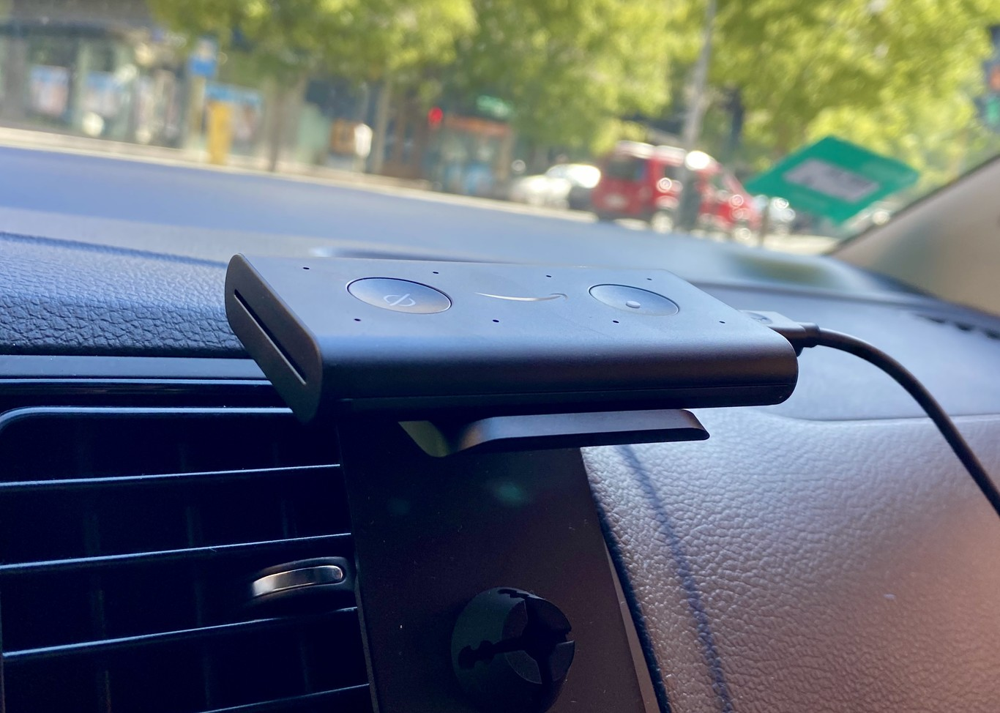

Echo Auto, análisis: Amazon pisa el acelerador con Alexa como copiloto
Amazon mete quinta y acelera de qué manera en la carrera de los asistentes de voz con la llegada de su asistente de voz a los vehículos con Echo Auto. Así, quienes carezcan de CarPlay o Android Auto – con sus respectivos asistentes Siri y Google assistant – en sus coches, o simplemente se sientan más cómodos con el ecosistema de Amazon, pueden hacerlo con este compacto dispositivo que podremos situar en el salpicadero para aprovechar algunas de las funcionalidades de su asistente de voz. Hemos probado el Echo Auto y esta ha sido nuestra experiencia.
Un diseño conservador y funcional
Si hay una palabra para definir la estética Echo Auto, esa es conservador. No es el diseño más compacto ni el más original, pero lo de montarlo en una rejilla mediante el soporte incluido es un recurso socorrido que ya sabemos que funciona, porque es bastante común en ambientadores o soportes para móvil... como el mío. En ese caso, nos vamos a encontrar con un salpicadero un tanto barroco. Eso sí, mucho cuidado porque no todas las rejillas son compatibles.
El Echo Auto tiene forma de pequeña power bank. En su parte superior encontramos el botón de acción – que en la práctica apenas usaremos, ya que lo ideal es ir con las manos en el volante y manejarlo con la voz – y el de silenciar el micrófono. En uno de los laterales, una fina línea con un LED que se ilumina en azul cuando Alexa está escuchando activamente.
También en los laterales localizamos el puerto microUSB para la alimentación – que puedes conectar al USB del coche o al mechero con el adaptador incluido – y un jack 3.5 mm por si tu coche no tiene Bluetooth. En la zona inferior hay una muesca para fijarlo al soporte. Sencillo y funcional.
Limitaciones y configuración
Como comprobaremos más adelante, aunque uno de sus puntos fuertes es su amplia compatibilidad, no es válido para todo el mundo: antes de comprarlo, consulta que tu teléfono y la rejilla de tu coche sean compatibles con Echo Auto. Asimismo, hemos de tener en cuenta que funciona valiéndose de nuestra tarifa de datos para conectarse a internet y que es compatible a partir de Android 6.0 y iOS 12. Aunque no es incompatible, Amazon explica que funciona mejor en automóviles que no están equipados con Apple CarPlay o Android Auto.
Configurar el Echo Auto es prácticamente igual al proceso de otros dispositivos de Amazon. Lo primero es conectarlo a la corriente, lo que podremos hacer mediante la toma USB de nuestro coche o, si carecemos de ella, el mechero con el adaptador. Si todo está bien, la línea LED estará iluminada en color naranja.
Después tendremos que descargarnos en el móvil la aplicación Amazon Alexa y crearnos una cuenta (si no tenemos una cuenta de Amazon) para vincularla a los dispositivos. Dentro de la app, en la pestaña "Dispositivos", pulsaremos sobre el icono "Añadir dispositivos" y después seleccionamos "Amazon Echo" y "Echo Auto". En la siguiente pantalla aparecerá el nombre del dispositivo, pulsamos sobre él.
En la última pantalla nos preguntará si podemos conectar nuestro móvil al coche a través de Bluetooth para reproducir música, como era mi caso. En caso contrario, tendremos que conectarlo mediante el cable auxiliar. Finalmente, nos pedirá autorización para acceder a ciertos servicios solo cuando se usa la app o siempre.

Qué puedes hacer con él
Una de las preguntas que podemos hacernos antes de tomar la decisión de comprarlo es saber qué podemos hacer con él. La idea base es usar un asistente de voz valiéndose de los altavoces del vehículo para la salida de audio. Hasta ahora, esto pasaba por contar con sistemas como CarPlay o Android Auto, que o bien pueden venirnos de serie en nuestro vehículo o podemos liarnos la manta a la cabeza y comprar e instalar una radio con CarPlay o con Android Auto. En este sentido, además de ser más asequible, su instalación es mucho más rápida y sencilla. Otra ventaja es que puede conectarse tanto a través del Bluetooth como mediante el cable auxiliar con toma jack de 3.5 mm, lo que abre las puertas a modelos más veteranos.
En mi tiempo probando el Echo Auto lo que más he hecho ha sido usarlo como DJ: pedirle mientras estoy conduciendo que me ponga cierta canción o una playlist concreta, algo que puede hacerse mediante los servicios de Amazon Music (por defecto), Apple Music o Spotify. Lo mismo puedes hacer con servicios de podcasts como iVoox o con emisoras de radio con TuneIn.
Otro de los usos estrella de Alexa en el coche es pedirle que haga una llamada por ti, simplemente con la orden "Alexa, llama a Fulanita". Si solo hay una entrada en tu agenda, la llamará inmediatamente. En caso de duda, te preguntará.
Pero ya que cuentas con un asistente de voz, ¿por qué no aprovecharlo para la conducción? Así, le he preguntado dónde estábamos, rutas, estado del tráfico o si había gasolineras cerca. Así como Apple tiene Apple Maps como determinado y Android hace lo propio con Google Maps, con el Echo Auto deberemos acceder a la configuración del dispositivo dentro de la app para elegir qué servicio de navegación será el determinado, pudiendo elegir también Waze. A partir de aquí, podremos preguntarle cómo ir a San Sebastián para que abra la app y podamos seguir las indicaciones.
En general, Alexa responde tus dudas igual de bien en casa que en el coche, por lo que igual te da preguntarle cómo de lejos está Zaragoza o la edad de Julio Iglesias.
Del mismo modo, podremos usarlo para consultar nuestra agenda, lista de tareas, crear recordatorios, tareas que si gestionamos desde el móvil podremos hacer con la voz sin necesidad de despegar las manos del volante. También resulta interesante para entretener a los pasajeros con juegos como el Trivial, siempre y cuando activemos dicha skill en la aplicación. En este sentido, es recomendable echar un vistazo – o preguntarle directamente por sus mejores skills – para exprimirla al máximo: que nos lea audiolibros, las noticias, sonidos relajantes...
Como puede comunicarse con otros altavoces inteligentes de Amazon, si en casa disponemos de altavoces inteligentes Echo y dispositivos conectados compatibles, también podremos dar órdenes desde el coche para la domótica del hogar. Así, en un día cálido podríamos por ejemplo darle la orden de conectar el aire acondicionado para que al llegar a casa la temperatura sea la deseada. Y lo mismo con un termostato inteligente o un enchufe conectado.
Un dato importante para la privacidad: como en cualquier dispositivo Echo, Amazon recalca que Alexa solo nos empieza a escuchar cuando la invocamos con la palabra de activación ("Alexa", por defecto). De todos modos, podemos pulsar el botón de mute, que desactiva el micrófono, para que nunca nos escuche. O la opción más radical: desconectar el dispositivo. Sea como sea, siempre podremos revisar, escuchar y borrar nuestras grabaciones.
Me ha sorprendido que incluso con las ventanas abiertas, ruidos mecánicos y ambientales, Alexa ha sido capaz de captar mis órdenes de voz. El "secreto" no es otro que una configuración de ocho micrófonos que anticipa que efectivamente, estamos ante un escenario más exigente que el de un domicilio. Basta con echar un vistazo al resto de Echos de Amazon para darse cuenta: el sencillo Dot integra cuatro pero modelos más ambiciosos como el Echo Plus se quedan en siete.
Su funcionamiento es bastante fluido y el tiempo de respuesta entre nuestra orden de voz y la ejecución es cuestión de pocos segundos, pero dependemos de la cobertura del móvil, ya que tira de la conexión a internet de nuestro terminal y, estando en movilidad, puede suceder que en momentos determinados del viaje pierda la conexión a internet. Y sin datos, no hay "magia". Fruto de estas caídas en ocasiones el dispositivo se bloquea, teniendo que abrir la aplicación para restablecer el funcionamiento.
Echo Auto, la opinión de Xataka
La rutina en viaje con mi Volkswagen Polo de octubre de 2015 consistía en preparar el navegador o Spotify antes de moverme y, a partir de aquí, apañarme con los botones del volante tanto para la música como para las llamadas, ya que el ordenador de a bordo de mi coche no me muestra más que datos relativos al consumo de gasolina o la reproducción actual.
Con el Echo Auto he accedido fácilmente mediante órdenes de voz al navegador, llamadas o música sin más dificultad que una configuración adecuada en la aplicación, tres usos muy frecuentes en mi conducción que he agradecido enormemente. Pero además cuenta con un amplio abanico de skills y la comunicación con otros dispositivos Alexa que nos permiten interactuar con la domótica de casa. En este sentido, este dispositivo permite competir de tú a tú en funcionalidad con las radios con CarPlay o Android Auto y sus respectivos asistentes de voz.
Es cierto que dependemos de la conexión del móvil y, a su vez, de la tarifa de datos, lo que en la práctica implica que de vez en cuando nos podamos desesperar cuando se cae la cobertura. Si vivís en grandes ciudades y vuestros desplazamientos se ciñen a esas zonas, no lo notaréis mucho. Pero si estáis lejos de las grandes urbes y os movéis por lo rural, os pasará con más frecuencia.
Solo por el tema de la navegación, llamadas y música, este dispositivo merece la pena para muchos usuarios (servidora incluida), pero Amazon cuenta con dos ases en la manga: que el Echo Auto es considerablemente más barato que cambiar la radio por una con CarPlay o Android Auto y que la instalación es coser y cantar... o bueno, enchufar y listo.